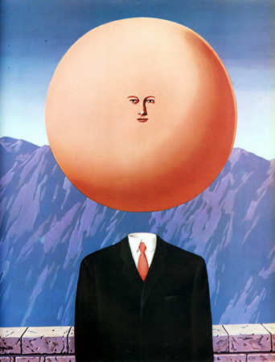

Poco se conoce acerca de los primeros años de Magritte. Nació en Lessines, provincia de Hainaut, en 1898, el mayor de los hijos de Léopold Magritte, sastre y comerciante de telas, y Regina (nacida Bertinchamps). Comenzó sus lecciones de dibujo en 1910. El 12 de marzo de 1912, su madre se suicidó ahogándose en el río Sambre. Este no fue su primer intento, pues llevaba años intentando quitarse la vida, obligando a su marido Léopold a encerrarla en su dormitorio. Un día ella escapó y estuvo perdida por días. Más tarde fue descubierta, muerta, río abajo. De acuerdo a la leyenda, Magritte, quien entonces tenía 13 años, estaba presente cuando el cuerpo fue recuperado del agua, pero recientes investigaciones han desacreditado tal historia. La imagen de su madre flotando, con su vestido cubriendo su cara, puede haber influenciado una serie de pinturas de 1927 a 1928, incluyendo una de sus obras más conocidas, Les Amants, pero el propio Magritte desechaba dicha interpretación del cuadro.
Realizó sus primeros cursos de pintura en Châtelet. En 1915 comienza a hacer sus primeras obras en la línea del Impresionismo. Entre 1916 y 1918, estudia en la Academia de Bellas Artes de Bruselas. Expone por primera vez en el Centro de Arte de Bruselas en 1920, junto a Pierre-Louis Flouquet, con quien comparte un estudio. Tras el servicio militar trabaja temporalmente como diseñador en una fábrica de papel. En 1923 participa con Lissitzky, László Moholy-Nagy, Lyonel Feininger y Paul Joostens en una exposición en el Círculo Real Artístico.
Su obra del período 1920-1924, por su tratamiento de los temas de la vida moderna, su color brillante y sus investigaciones sobre las relaciones de la forma tridimensional con la superficie plana del cuadro, muestran influencias del Cubismo, del Orfismo, del Futurismo y del Purismo.
En 1922 ve una reproducción de La canción de amor, cuadro de Giorgio de Chirico, que le impresiona profundamente, y a partir de 1926 se independiza de las influencias anteriores y basa su estilo en el de este pintor. En 1922 contrajo matrimonio con Georgette Berger, una amiga de su juventud, que le sirvió de modelo para alguna de sus obras.
En obras como La túnica de la aventura (1926), expresa su sentido del misterio del mundo por medio de la irracional yuxtaposición de objetos en una atmósfera silenciosa.
En El asesino amenazado (1926), el espacio perspectivo deriva de De Chirico y de los decorados de los primeros melodramas cinematográficos. En este mismo año se une a otros músicos, escritores y artistas belgas, en un grupo informal comparable al de los surrealistas de París.
En 1927 se establece en las cercanías de París y participa, durante los tres años siguientes, en las actividades del grupo surrealista (sobre todo, se relaciona con Éluard, Breton, Arp, Miró y Dalí). Aporta al surrealismo parisino un resurgimiento del ilusionismo. A diferencia de Dalí, Magritte no usa la pintura para expresar sus obsesiones privadas o sus fantasías, sino que se expresa con agudeza, ironía y espíritu de debate.
En 1928 participa en la exposición surrealista en la galería Goemans de París.
En 1930 regresa a Bruselas huyendo del ambiente polémico parisino, y allí pasa tranquilo el resto de sus días.
En cuanto a su personalidad, se caracterizó por ser: juguetón y fantasioso en su juventud; excéntrico, provocador y egocéntrico en su edad más adulta. Dueño de una pericia enorme en el manejo del pincel, Magritte forjó un catálogo de obras muy particular, que recuerdan al estilo desarrollado por Dalí, aunque menos grandilocuente.
Ávido de ser alguien, Magritte se embarcó en varios movimientos pictóricos, siendo el Surrealismo donde más cómodo se sintió. Aunque en un principio se unió al manifiesto surrealista (década del 1940) de los fundadores, no encontró la fama, sino que esta le vino a posteriori, en la década de 1960, cuando sus trabajos ganaron popularidad en Estados Unidos, llegando a ser muy influyentes en movimientos modernos como el Pop Art y el arte conceptual neoyorkino.
Sus obras |
|
|
Les AmantsEsta enigmática obra muestra una pareja de hombre y mujer besándose, pero sin tocarse ni verse. Bajo este acto la comunicación entre la pareja está realmente obstaculizada por una barrera que no permite sentir, tocar ni ver al otro, además hablar con dificultad y escuchar poco. Algunos biógrafos atribuyen estas figuras a la convivencia que llevaban los padres del artista, la marcada desafección del padre y la depresión de la madre. |
|
|  |
L'Art de VivreLa pintura no es de las más conocidas, sin embargo, más que otras, alberga un enorme significado psicológico ligado al pintor. El personaje principal, muy similar a "El hijo del hombre" se presenta con particularidades que dejan ver las creencias e ideas que el artista tenía sobre la vida, entre ellas: su agnosticismo, su egocentrismo; su confianza en el sistema comunista y en la razón humana. La Cabeza inflada, despegada de los hombros, haciendo las veces de sólo delante de las montañas, denota la superioridad de la razón frente a ninguna otra fuerza ni moral. |
|
L'Assassin menacéSe podría pensar que la inspiración de esta obra proviene de algún pasaje literario, o incluso de una película, pero no es así. Es una composición que el artista se sacó de debajo de la manga, y gracias al título, que es muy dilucidador, se puede entender el suceso que transcurre en la misma. Un asesino de "guante blanco", está a punto de ser atrapado, está rodeado y se le ha pillado con las manos en la masa, no parece importarle ni saber que sus apresadores están a punto de actuar. Estos últimos caracterizados con el clásico sombrero de bombín, lo que indica la cercanía psicológica entre el artista y los personajes. |
|
|
L'Art de VivreEsta puede ser la pintura con los visos más trascendentales que se le conoce, no por casualidad podía estar pensando en la muerte o el más allá, ya que le que cumplía 68 años, en una época en la que llegar a eso era toda una hazaña, de hecho, murió tres años después. 2 conceptos principales son aquí representados: los dos personajes gemelos de alma y la infinidad del cielo. Ambos de algún modo flotan y charlan mientras "ascienden" a un estado más elevado, donde podrán seguir compartiendo. |
|
|
L'invention collectiveLa tela propone una imagen desconcertante, pretende hacer tomar conciencia al espectador sobre las ideas preconcebidas que tiene y no se da cuenta. En este caso la idea de "sirena", arraigada en el imaginario colectivo se torna inverosímil, aunque sin duda no menos que la sirena tradicional, las cual es una "invención colectiva" que no tiene nada de real en ella. |
|
| Grecia Pamela Maynez Escudero |